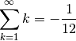

dummypackage package¶
Subpackages¶
Submodules¶
dummypackage.bar_module module¶
Module mimicking foo with more expensive memory and runtime requirements.
-
class
dummypackage.bar_module.Bar(size=1000000)[source]¶ Bases:
dummypackage.foo_module.FooSimilar to Foo, with higher memory and runtime requirements.
dummypackage.foo_module module¶
Module containing a simple class with low memory and runtime requirements.
Module contents¶
- 1 2 3 4
- Italics
- Bold
- Numbered and nested lists:
- This is a numbered list
- Nested lists have at least three characters indentation
Inline literals- Parameter fields: see class and method docstrings.
flake8 and
therefore have to be wrapped. This can be achieved with | blocks.Section about sections:¶
- Surrounding chars have to be at least as long as the title
No explicit hierarchy, but this recommended: #, *, =, -, ^, "
(the first two with overline).
Subsection:¶
“If I have seen further it is by standing on the shoulders of Giants.”
Or, in other words:

Emphasis:¶
Note
The sum of all parameters cannot exceed infinity
Warning
If the sum of all parameters exceeds infinity, behaviour is undefined!
Function descriptions:¶
Sphinx formatting:¶
-
dummypackage.add(a, b=None)¶ This is a cool function.
Parameters: - a (int or float) – a number
- b (int, float or None) – another number
Returns: a+b. If b is none, returnsaReturn type: integer or float
Note
Neither
anorbcan be infinity!
Google formatting:¶
This function does something.
- Args:
- name (str): The name to use.
- Kwargs:
- state (bool): Current state to be in.
- Returns:
int. The return code:
0 -- Success! 1 -- No good. 2 -- Try again.
- Raises:
- AttributeError, KeyError
Usage example:
>>> print public_fn_with_googley_docstring(name='foo', state=None)
0
BTW, this always returns 0. NEVER use with MyPublicClass.
Other structures:¶
Field lists:
| Author: | Homer J. Simpson |
|---|---|
| Email: | hjs@compuglobalhypermega.net |
Literal blocks, preceded by double colon:
This is a literal block
Markups are **not** rendered here.
Doctest blocks can be tested by the doc tool:
>>> [factorial(n) for n in range(6)]
[1, 1, 2, 6, 24, 120]
>>> [factorial(long(n)) for n in range(6)]
[1, 1, 2, 6, 24, 120]
- Grid tables must be indented:
Header 1 Header 2 Header 3 body row 1 column 2 column 3 body row 2 Cells may span columns. body row 3 Cells may span rows. - Cells
- contain
- blocks.
body row 4
Simple table:
| Inputs | Output | |
|---|---|---|
| A | B | A or B |
| False | False | False |
| True | False | True |
| False | True | True |
| True | True | True |